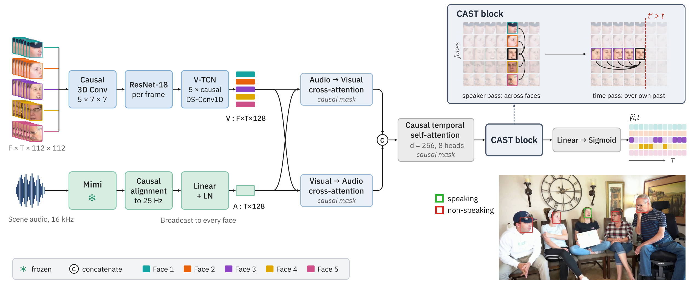

Causal Attention over Speakers and Time for Online Active Speaker Detection
30-second scenes from the MSDWild validation splits, processed by the CAST-ASD checkpoints. Each face is drawn with its frame-level speaking probability; the box turns solid when that probability reaches the decision threshold of 0.5. The tracks under the video show the same decisions over time against the ground-truth annotation. The badge on each clip is the causal model's mAP on that clip.
| This clip | mAP ↑ | mAPc ↑ | DER* ↓ | F1 @ 0.5 ↑ | Precision | Recall |
|---|
Scored on this clip alone with the evaluation code in the repository. Single clips vary a lot; the split-level numbers are in Results.
A scene is a grid with one row per face and one column per frame. A CAST block reads along one axis at a time: across the faces present at a frame, then along each face's own past.

TalkNet-style. Grayscale face crops pass through a left-padded 3D convolution, a per-frame ResNet-18 and five depthwise-separable causal 1D convolutions. The audio mixture is encoded once per scene by the frozen Mimi encoder from Moshi and causally aligned to the 25 Hz video frames. Causally masked cross-attention runs in both directions between the two streams, giving a d = 256 embedding, followed by causal temporal self-attention. The CAST block sits after it, before the head that produces one logit per face and frame.
Speaker pass, at every frame t, over the F faces present:
Time pass, along each face i under a causal mask M, with a scalar gate γ initialised to zero so an untrained block reproduces the backbone:
Attn is a Transformer layer with eight-head attention and a feed-forward expansion of four. The speaker pass costs O(F²d) per frame. Training uses BCE on the audio-visual logit plus two auxiliary BCE terms on the audio and visual streams, weighted λ = 0.4.
Click any cell to make it the output being computed.
Causal by construction. The speaker pass runs on a tensor with faces on the sequence axis and no time axis, so only the time pass needs a mask, for any number of faces.
Order-free. Face slots carry no positional encoding, so permuting the faces permutes the outputs. Track order is an artefact of the tracker and carries no information.
MSDWild is segmented into 30 s clips at 25 fps. few.val scenes hold two to four speakers; many.val scenes hold five or more and are zero-shot with respect to scene width, since training uses the few-speaker split only.
| many.val (5+ speakers) | few.val | ||||
|---|---|---|---|---|---|
| System | mAP ↑ | mAPc ↑ | FAc ↓ | DER* ↓ | mAP ↑ |
The two joint models are close while the scene fits inside LoCoNet's three-face roster and separate beyond it. The gap is largest for 5+ faces, which is 69.6% of many.val.
| Faces visible at the frame | 2 | 3 | 4 | 5+ |
|---|
With the front end held fixed, CAST is ahead on both metrics in all four matched pairs. At s = 5 the convolution still trails one CAST block while carrying 24× as many mixer parameters.
| Audio | Mixer | s | Blocks | Param. | mAP ↑ | FAc ↓ |
|---|
CAST-ASD gives up the least accuracy under causal constraints, 1.14 mAP, from the highest causal score; LoCoNet gives up 2.67. Lookahead and inter-face context act as partial substitutes.
| Architecture | Causal | Offline | Δ |
|---|
Model capacity. Two and three CAST blocks lie within seed variation of one block, and six destabilise training, as they do for the convolutional mixer. Reversing the order of the two passes has no measurable effect. One block is the deployment configuration: 1.57M parameters, 1.09 GFLOP per face-frame, measured zero lookahead.
| System | Causal | Offline |
|---|
The ordering is reproduced on a corpus close to the regime in which a three-face roster suffices, and the margin is correspondingly smaller than on MSDWild.
| MSDWild | |||
|---|---|---|---|
| AVA | few.val | many.val | |
On AVA a negative face-frame rarely competes with another visible speaker. On MSDWild most of them do, which is why it is the primary benchmark here. Reference speech whose speaker is not among the tracked faces accounts for 3.5% of few.val and 10.5% of many.val.
@misc{gupta2026castasd,
title = {{CAST-ASD}: Causal Attention over Speakers and Time for Online Active Speaker Detection},
author = {Gupta, Pratham and Qi, Haotian and Sandhan, Tushar and Skantze, Gabriel},
year = {2026}
}
This work was supported by the Wallenberg AI, Autonomous Systems and Software Program (WASP), funded by the Knut and Alice Wallenberg Foundation (KAW), and the Swedish Research Council project 2020-03812. Computations and data handling were enabled by the Berzelius resource at the National Supercomputer Centre, provided by the Knut and Alice Wallenberg Foundation. The per-face backbone builds on TalkNet-ASD; the baselines are reimplemented from LoCoNet and Light-ASD; the audio encoder is Mimi from Kyutai. We thank the authors of these projects and of the MSDWild and AVA-ActiveSpeaker datasets.